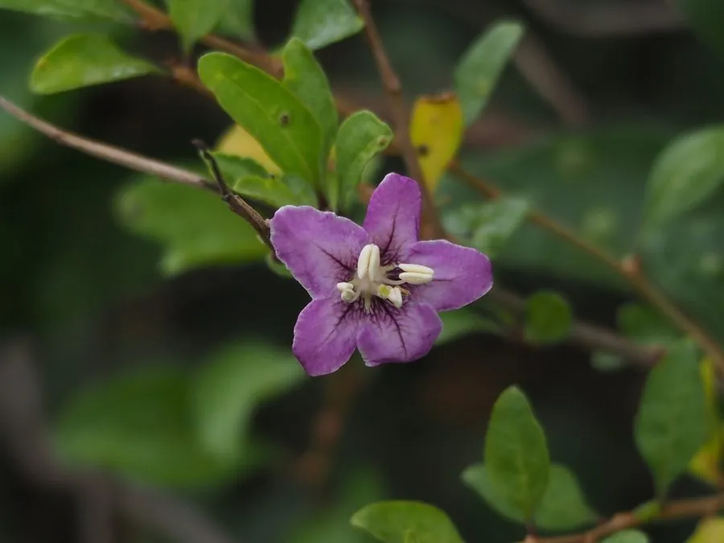

灌木与花木 · 植物界
枸杞 Lycium chinense

中国常见的落叶灌木，果实枸杞是著名的滋补中药材，嫩叶可作野生蔬菜，耐旱耐盐碱，栽培历史悠久。
- 分类
- 门被子植物门纲木兰纲目茄目科茄科属枸杞属
- 栖息环境
- 海拔 2000 米以下的山坡、荒地与盐碱地，耐寒耐旱耐盐碱
- 地理分布
- 中国东北、华北、西北及西南地区，朝鲜半岛、日本、欧洲也有分布
- 保护级别
- 暂无评估；中国未列入国家重点保护野生植物名录
物种志
枸杞为落叶灌木，高可达 1.5 m，枝条细长、拱形下垂，常有刺；叶片互生或簇生，卵形至披针形。花期 6–9 月，花单生或 2–4 朵簇生于叶腋，花冠漏斗状、5 裂，淡紫色；果实为浆果，长椭圆形或卵圆形，成熟时鲜红色，长 1–2 cm，内含多数细小种子，果期 8–11 月。
枸杞分布于中国东北、华北、西北及西南地区，也见于朝鲜半岛、日本、欧洲，喜光、耐寒、耐旱、耐盐碱，适应性强，常生于山坡、荒地与盐碱地。果实即中药“枸杞子”，能滋补肝肾、益精明目，是传统滋补佳品；嫩叶可作蔬菜，称“枸杞头”；根皮即中药“地骨皮”，能清虚热。宁夏中宁是著名的枸杞产区，栽培历史数百年。枸杞耐旱耐盐碱，也是盐碱地改良与水土保持的优良灌木。
形态与习性
- 株高可达 1.5 m，枝条拱形下垂
- 花期6–9 月，花淡紫色
- 果期8–11 月，浆果鲜红色
- 光照喜光，不耐长期荫蔽
- 水分耐旱，怕积水
- 土壤耐盐碱、耐瘠薄
- 主要用途枸杞子入药滋补、嫩叶作蔬菜、根皮入药、盐碱地改良
趣味知识
- 枸杞的果实成熟后鲜红透亮，是传统滋补中药“枸杞子”的来源。
- 枸杞的嫩叶可作蔬菜，叫“枸杞头”，在江南春季常被食用。
- 枸杞的根皮是中药“地骨皮”，与枸杞子的药效不同。
- 宁夏中宁是著名的枸杞产区，当地栽培枸杞已有数百年历史。